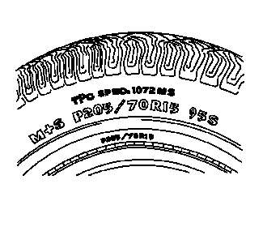

轮胎和车轮的检查

所有新生产车型的轮胎上都有轮胎性能标准（TPC）规格号模压在侧壁上。轮胎性能标准规格号为一个4位数字，以字母“TPC SPEC”开头，位于侧壁上轮胎规格旁。更换轮胎应具有相同的轮胎性能标准规格号。
轮胎磨损

检查轮胎和车轮总成是否有以下情况：
- • 异常磨损，如胎面凹陷、平斑和/或胎面边缘磨损这些情况会使轮胎发出隆隆声、呼啸声、拍打声和/或导致整个车辆振动。
- • 轮胎充气压力符合车辆规定
- • 轮胎侧壁鼓包切勿将鼓包这一异常状况与正常的帘布层搭接接头（通常表现为侧壁上的凹痕）混淆。
- • 轮辋凸缘弯曲